Gustavo Correa
Humor, lifestyle, wellness e moda.
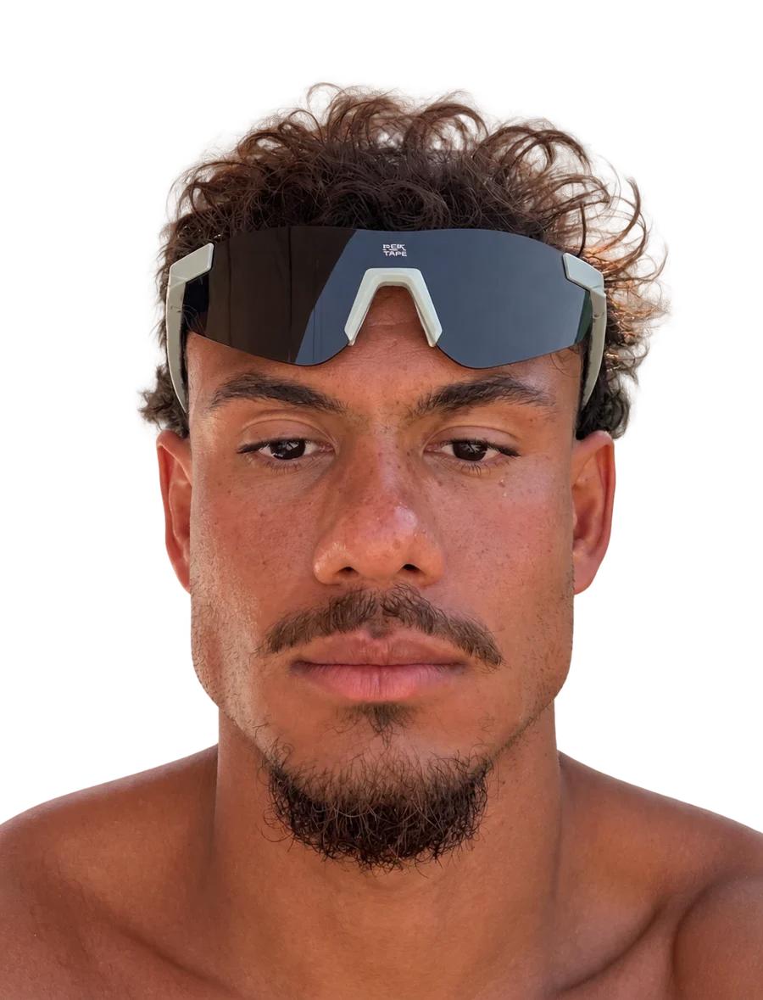
Seguidores do Instagram112.790
Seguidores do TikTok159.059
Seguidores do YouTube6 mil
Seguidores somados ao vivo277.859
Marcas que já colaboramos
Ver as publisSobre
Vivências e umas bobeiras
Carioca de 26 anos, nascido e criado na Zona Oeste do Rio de Janeiro, Gustavo começou a criar conteúdo em 2024 com vídeos de lifestyle e uma boa dose de humor. No fim de 2025 passou a se dedicar de forma consistente, aumentou a frequência de publicações e consolidou o personagem performático.
Hoje são mais de 112 mil seguidores no Instagram e 159 mil no TikTok. Os vídeos curtos são o formato principal; no YouTube, os vlogs mostram a rotina e as viagens e aproximam a audiência do dia a dia dele.

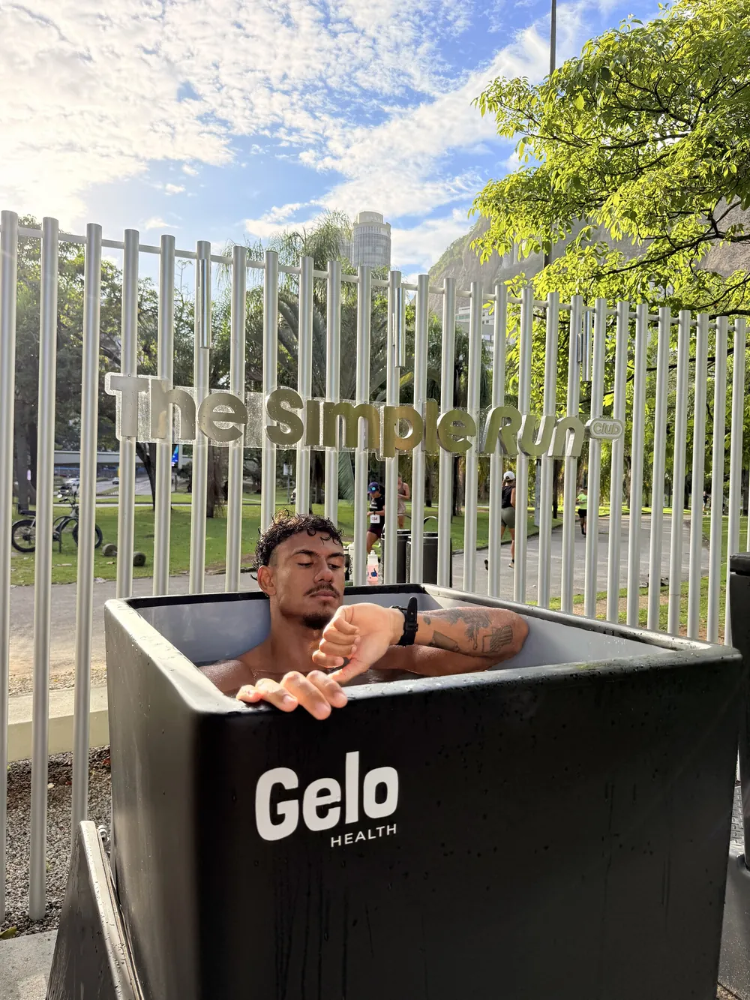

O personagem
O homem
performático
“A verdade é que todo mundo é um pouco performático.”
É o personagem mais famoso do Gustavo e a porta de entrada de boa parte do público: o cara da ecobag, do livro na mão, do fone com fio e do brunch com referência Pinterest. Uma sátira que todo mundo reconhece e que já levou marcas como CeraVe, Reserva Go, QuintoAndar e Jappa da Quitanda para dentro da piada.
Performômetro
Monta aí o seu homem performático 👇🏾
0%
Fer comentou: Apenas um cara tranquilo
- 6,1 mi
- views em 4 vídeos do personagem no TikTok
- 4,1 mi
- views na publi da CeraVe com o personagem

Achei conceito
Mais vídeos do personagem
-
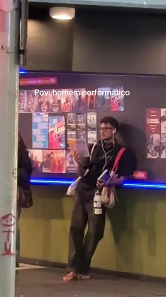
Apenas um cara tranquilo
Ver no TikTok -

Performance
Ver no TikTok -

Contemplando a arte
Ver no TikTok -

A arte respira
Ver no TikTok
Além do personagem
- Humor de criaEsquetes do dia a dia na Zona Oeste, com o Bruninn, a Gita e a Fer.
- VlogsRotina, treinos, praia e viagens no YouTube, com quase 9 minutos de duração média.
- WellnessCorrida, futevôlei, banho de gelo e treino ao ar livre.
- ModaLooks no feed e a própria marca de roupas, a GVST Apparel.
Métricas
Números ao vivo
Ao vivo
112.790
seguidores
- Publicações
- 437
- Views em 30 dias Media Kit
- 8,3 mi
- Contas alcançadas Media Kit
- 1,7 mi
- Interações Media Kit
- 764 mil
TikTok
159.059
seguidores
- Curtidas totais
- 14.304.612
- Views somadas
- 99,3 mi
- Vídeos
- 555
- Visitas ao perfil Media Kit
- 131 mil
YouTube
6 mil
inscritos
- Views do canal
- 390.381
- Vídeos
- 80
- Horas em 28 dias Media Kit
- 611
- Duração média Media Kit
- 8min52
Seguidores somados · Instagram + TikTok + YouTube
277.859
Publicidade
Publis com marcas
Um reel de cada marca. Toque numa publi para ver todos os vídeos da campanha, com as views públicas e o link direto.
-
 TV GloboEntretenimento · Copa do Mundo 2026 e Avenida Brasil
Time de criadores da Copa na @tvglobo: a torcida performática nos jogos do Brasil e as ruas do Rio comentando Avenida Brasil.
13 vídeos · mais de 72 mil curtidas no perfil da TV Globo
TV GloboEntretenimento · Copa do Mundo 2026 e Avenida Brasil
Time de criadores da Copa na @tvglobo: a torcida performática nos jogos do Brasil e as ruas do Rio comentando Avenida Brasil.
13 vídeos · mais de 72 mil curtidas no perfil da TV Globo
-
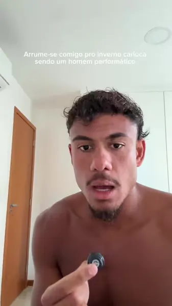
CeraVeSkincare Duas campanhas com o personagem performático, no TikTok, no Instagram e no YouTube Shorts. 2 campanhas · 4,7 mi views no TikTok -
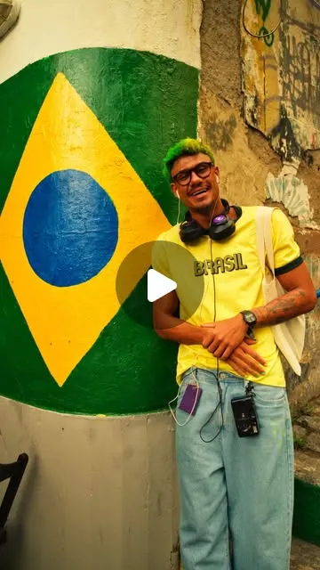
 NubankBanco digital · bastidores de campanha
A vida de um “quase influenciador” gravando uma campanha da Nubank, contada por ele mesmo.
Bastidores no Instagram
NubankBanco digital · bastidores de campanha
A vida de um “quase influenciador” gravando uma campanha da Nubank, contada por ele mesmo.
Bastidores no Instagram
-
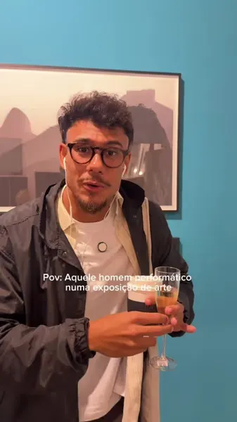
Reserva GoModa · calçados · ArtRio 2026 O “artista plástico contemporâneo” na ArtRio com o conforto do tênis R-Oskaka. Publicidade no TikTok e no Instagram -

 QuintoAndarImóveis
Bem-vindo à Astéric House: o cantinho vintage do personagem e o aluguel sem fiador e sem burocracia.
Publicidade no Instagram
QuintoAndarImóveis
Bem-vindo à Astéric House: o cantinho vintage do personagem e o aluguel sem fiador e sem burocracia.
Publicidade no Instagram
-
 639HertzApp de relacionamento
O app que conecta pessoas pelo mapa astral, antes da aparência. Duas campanhas.
2 publicidades no Instagram
639HertzApp de relacionamento
O app que conecta pessoas pelo mapa astral, antes da aparência. Duas campanhas.
2 publicidades no Instagram
-
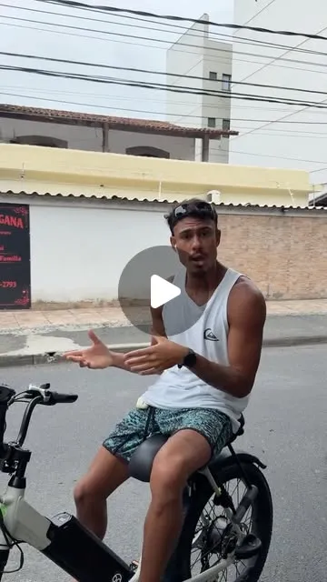
Lev BicicletasMobilidade elétrica · cupom GVSTA Duas parcerias com a bike elétrica, incluindo o “playboy metido a cria” em Búzios, e a LEV de volta no feed em outubro. 3 vídeos · 431 mil views no TikTok -
 Jappa da QuitandaRestaurante
O clima clean astéric do Jappa e os 7 Golden Tickets dos 7 anos da marca.
Publicidade no Instagram
Jappa da QuitandaRestaurante
O clima clean astéric do Jappa e os 7 Golden Tickets dos 7 anos da marca.
Publicidade no Instagram
-
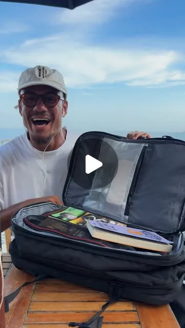
 BagaggioMalas e acessórios · cupom GVSTAVO
A mochila que encarou um mochilão pela Europa, Fer.
Publicidade no Instagram
BagaggioMalas e acessórios · cupom GVSTAVO
A mochila que encarou um mochilão pela Europa, Fer.
Publicidade no Instagram
-
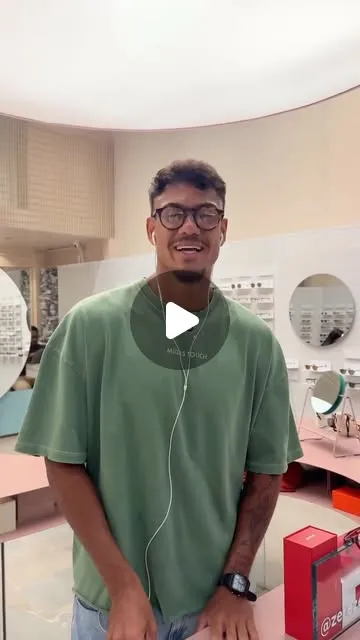
ZerezesÓculos · cupom EZ-GVST
A galera de Sanca só usa Zerezes, Fer.
Parceria no Instagram
-
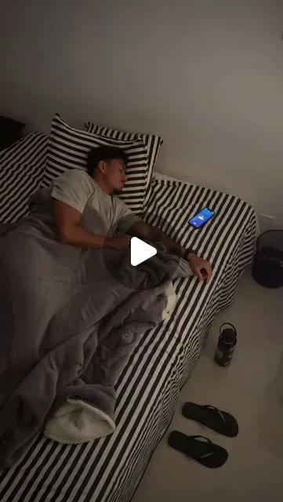
TuyoGarrafas · cupom GVST10 Bater a meta diária de água ficou fácil com a Tuyo na rotina. Cupom GVST10 dá 10% de desconto no site. Divulgação no Instagram · cupom GVST10
Quem assiste
Audiência
- Faixa etária
- 18 a 34 anos
- Classe
- A e B
- Gênero
- 69,7% homens · 30,3% mulheres
- Localização
- 31% no Rio de Janeiro Zona Sul, Oeste e Norte
- Interesses
- Humor, lifestyle e wellness
- Formatos
- Reels, TikTok, Story, Feed e vídeo longo
Mais vistos no TikTok
-

A melhor parte é sempre no intervalo
Ver no TikTok -

Não tem legendado, Fer?
Ver no TikTok -

O tal encontro aconteceu
Ver no TikTok
Agenciamento
MUDAH
A MUDAH é um hub de criatividade, comunicação e marketing de influência que conecta criadores e marcas. Propostas comerciais, campanhas e parcerias com o Gustavo são atendidas pela agência.